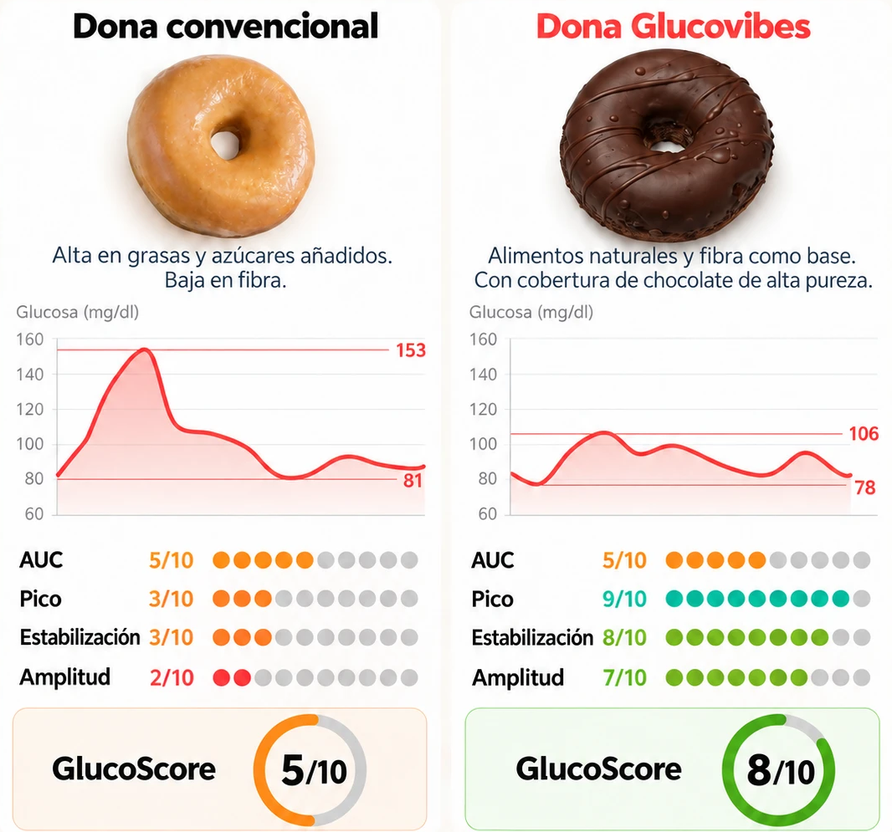

Misma comida, distinta respuesta
Dos donuts. Dos respuestas.
¿Un donut puede no disparar tu glucosa? Depende de cómo esté hecho.
Desliza →
Hacemos visible lo invisible
¿Un donut puede no disparar tu glucosa? Depende de cómo esté hecho.
Desliza →

Curvas observadas en la misma persona, dos días consecutivos a la misma hora. El impacto puede variar entre personas.
| Industrial | Glucovibes | |
|---|---|---|
| Pico | 153 mg/dl | 106 mg/dl |
| Mínimo | 81 mg/dl | 78 mg/dl |
| Pico (índice) | 3/10 | 9/10 |
| Estabilización | 3/10 | 8/10 |
| Amplitud | 2/10 | 7/10 |
| GlucoScore | 5/10 | 8/10 |
Con fibra y comida real, el mismo antojo se gestiona con mucha más calma.
Desliza →
glucovibes.com